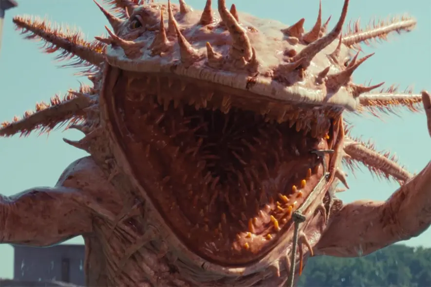
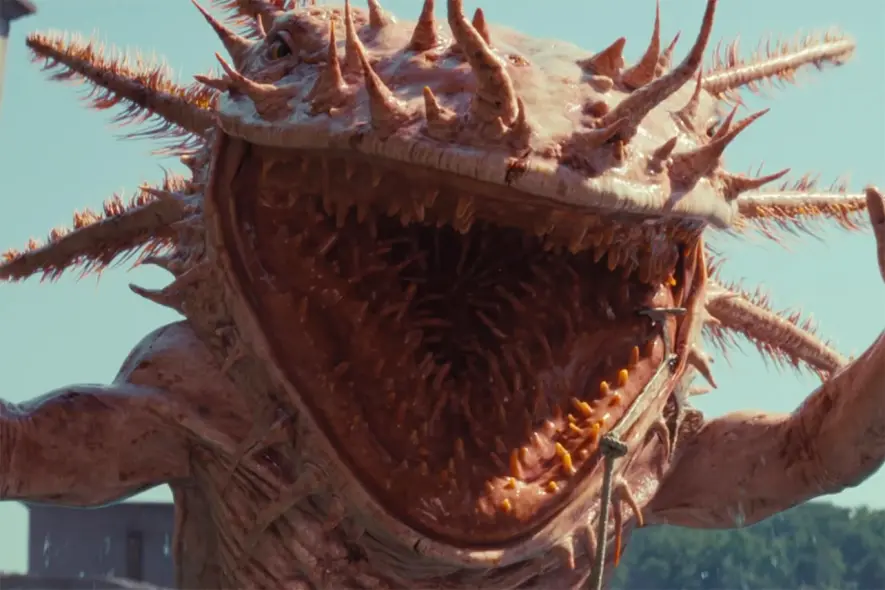

@keyframes est une règle CSS qui permet de définir une animation.
Elle spécifie les étapes de l'animation en définissant les transformations que l'élément doit subir à chaque
étape.
Voici un exemple où l'image effectue un zoom avant et arrière en utilisant @keyframes.

Avec @keyframes on peut créer un un effet de clignotement.
L'élément a une animation d'opacité qui se répète indéfiniment toutes les 2 secondes.
L'opacité descend, ce qui rend l'élément presque transparent avant qu'il ne revienne à son opacité d'origine.
Avec @keyframes on peut créer un effet de déplacement.
L'élément a une animation qui se répète indéfiniment.
Cette animation déplace l'élément horizontalement puis il revient à sa position initiale.
La position relative permet ce mouvement sans affecter les autres éléments autour de lui.

Avec @keyframes on peut créer un effet de changement de couleur de fond et de texte.
Ici, l'animation de fond se répète comme elle du titre de la page.
Elle commence avec une couleur de fond noire, passe ensuite à une teinte aquamarine, puis orange
pour finalement revenir au noir à la fin du cycle.
Cette animation crée une transition douce entre les couleurs, donnant un effet dynamique et visuel au fond de
l'élément.
Si vous êtes resté plus de 20 secondes sur la page, vous avez eu l’effet. Avec l’élément délai,
l’animation est activée après un certain temps. Après ce délai, l'élément devien visible et en seulement 0,5
seconde il passe à une échelle de 10. Ensuite, l'image reste affichée indéfiniment grâce à l’élément forwards.
Ce délai rend l'effet inattendu ;)


Ici nous avons le même effet de mouvement que l'autre, mais en utilisant l'élément alternate. Cette
fois si le @keyframes ne revien pas à sa position de départ à la fin, donc en utilisant l'élément alternate,
l'animation est réactivé a l'envers une fois qu'il est a la position final.